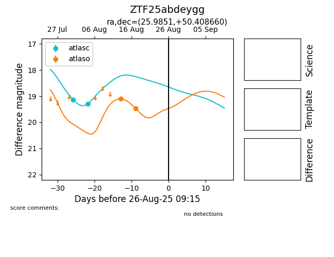

Target ZTF25abdeygg at 2025-08-26 09:35, see:
FINK: fink-portal.org/ZTF25abdeygg
Lasair: lasair-ztf.lsst.ac.uk/objects/ZTF25abdeygg
ALeRCE: alerce.online/object/ZTF25abdeygg
alt names
ZTF25abdeygg (ztf,fink)
coordinates:
equatorial (ra, dec) = (25.9851,+50.40867)
galactic (l, b) = (131.4278,-11.59499)
photometry
last ztfr=19.75
5 ztfr detections
